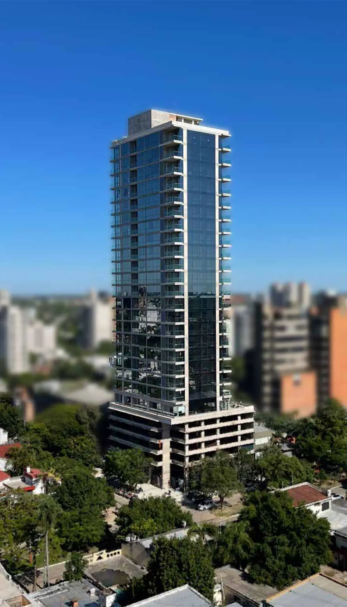

Arquitectura
Una obra que dialogue con la fachada, el paisaje y la escala del peatón. Cada proyecto gana un carácter propio y un nuevo punto de referencia.
Una nueva forma de hacer visible a MARQ en Resistencia.
Cada proyecto, una obra. Cada obra, un vínculo con la ciudad.
Los edificios están en la ciudad. El desafío es que las personas también sepan quién los hace posibles.
Para hacer conocida a MARQ, cada proyecto puede convertirse en algo más que una dirección: un lugar que la gente recuerde, nombre y comparta.

Arquitectura. Arte. Comunidad.
Una nueva forma de crear valor.
MARQ Alloy une arquitectura y arte regional para hacer visible a la marca en la vida cotidiana de Resistencia. Cada edificio aporta un lugar. Cada obra, una razón para recordarlo.
Una obra que dialogue con la fachada, el paisaje y la escala del peatón. Cada proyecto gana un carácter propio y un nuevo punto de referencia.
Talento local en primer plano: artistas de la región o un concurso estudiantil, mediante un convenio a explorar con FADyCC–UNNE.
MARQ y el artista, grabados en hormigón. Una luz cálida revela la escultura al caer la noche. La firma permanece, todos los días.
El edificio y su escultura se inauguran juntos. Una celebración abierta que presenta el proyecto, cuenta la historia del artista y genera contenido para los medios.
Tomamos Natalini como referencia para imaginar una inauguración conjunta: el edificio y su escultura, presentados como un mismo proyecto.
La forma final y el material se definirán con el artista. La escultura ilustrada es una exploración, no una obra seleccionada.
Base de hormigón con autoría y marca. Iluminación cálida propuesta de 2700 K, con mantenimiento previsto desde el diseño.
Explorá el entorno real para pensar visibilidad y circulación.
La escultura despierta interés. La firma conecta ese encuentro con MARQ. Al repetirse en distintos proyectos, la experiencia puede convertirse en reconocimiento.
Una obra inesperada cambia el recorrido de todos los días. El edificio empieza a ser un lugar para mirar, fotografiar y compartir.
En la base encontrás al artista y a MARQ. La marca aparece ligada a una experiencia concreta: sumar arte a tu ciudad.
“Nos encontramos en la escultura de MARQ”. Ese es el vínculo que buscamos: que el proyecto se vuelva referencia y la marca, parte de la conversación.
El edificio y la escultura se presentan juntos. Una historia para contar.
La obra sigue construyendo presencia después.
Imaginá que Natalini abre sus puertas junto con su escultura. Una misma inauguración, cuatro maneras de contar la llegada del proyecto a la ciudad.
MARQ presentó el edificio y una obra de autor regional en una misma inauguración. La propuesta Alloy integra arquitectura y arte desde el comienzo de cada desarrollo.
El edificio y la obra se presentaron en un mismo acto. Con Alloy, la desarrolladora propone que cada nuevo proyecto nazca con una identidad artística propia.
La inauguración reunió arquitectura y arte regional en una misma celebración. La pieza forma parte de MARQ Alloy y acompaña al proyecto desde su apertura.
El edificio abrió sus puertas junto con una obra de autor regional. La presentación conjunta marca el inicio de Alloy, la propuesta de MARQ para unir arte y arquitectura.
Escenarios ficticios creados para presentar MARQ Alloy. No son publicaciones reales ni implican respaldo o afiliación con estos medios.
La noticia es el comienzo.
La presencia permanece.
Una inauguración puede generar fotografías, entrevistas al artista, recorridos y piezas para redes. Después del evento, la obra sigue allí: integrada a la experiencia cotidiana de la ciudad.
Responder lo mismo. Buscar un precio. Pedir que actualicen la web. La información está, pero conectar cada parte lleva tiempo.
4 hpor día respondiendo consultas cuando hay pauta, según el relevamiento compartido.
Un asistente para el equipo, en el lugar donde ya trabaja: WhatsApp. Le escribís, le mandás un audio o una foto. MARQUI conecta la información y prepara el siguiente paso.
Probá la experiencia ↗Elegí una tarea y recorré la conversación. Son ejemplos interactivos de la propuesta, sin conexión a WhatsApp, la web ni pagos reales.
Dentro del chat con el cliente, en el navegador.
Pauta y clientes conservan sus conversaciones por separado. La propuesta es que MARQUI ayude al equipo en ambas, cuando abre un chat o le pide una mano.
Una integración en WhatsApp Web propone respuestas dentro de la conversación. Elegís, corregís y enviás vos, desde la línea de siempre.
Integración propuesta para el navegador, no para la app de escritorio. Su viabilidad debe validarse.MARQUI es un contacto. Le reenviás una consulta o le pedís una tarea con texto, audio o fotos. Te devuelve lo que necesitás para seguir.
Sin un nuevo panel para el trabajo de todos los días.MARQador convierte las consultas en un resumen semanal: qué busca la gente, qué la frena y qué canales llevan a una reunión.
Y cuando necesitás profundizar, preguntás: “¿Qué fue lo más consultado este mes sobre MARQ Collection?”.
La tipología más consultada en este ejemplo.
Una conversación para revisar la propuesta comercial.
El canal que más llega a reunión en esta simulación.
El cliente habla con una persona de MARQ. Las sugerencias se pueden editar antes de enviarlas.
Landings, fotos y precios públicos pasan por una confirmación. Los precios privados quedan fuera de la web.
Permisos por integrante y un historial para saber quién hizo qué y cuándo.
La conexión de las dos líneas actuales, la lectura de la lista de precios y la integración con la web de MARQ. También los permisos del equipo y el flujo de reservas con Mercado Pago.
La asistencia dentro de WhatsApp Web es una integración propuesta, no una función oficial de WhatsApp. Su implementación y mantenimiento dependen de la viabilidad técnica y de las condiciones de la plataforma.
Los porcentajes de conversaciones que llegan a reunión requieren historial suficiente y resultados registrados. Son una referencia del pasado, no una predicción individual.
Esta sección está reservada. Su contenido se incorporará en una próxima etapa.